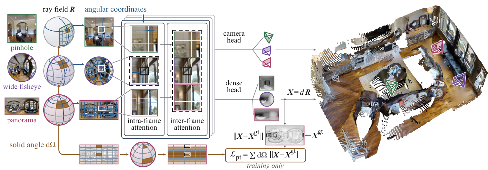
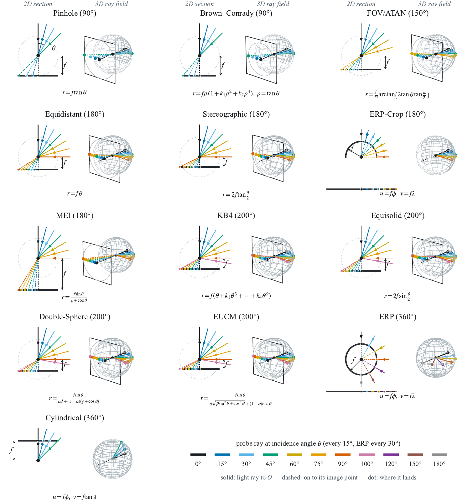
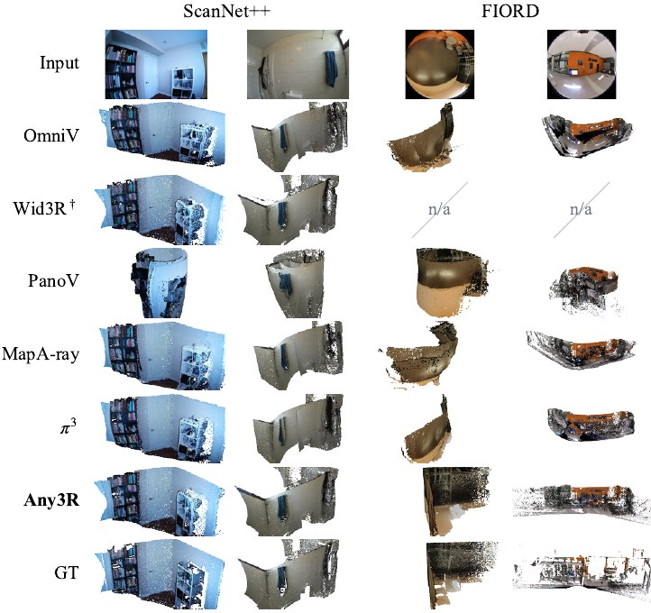
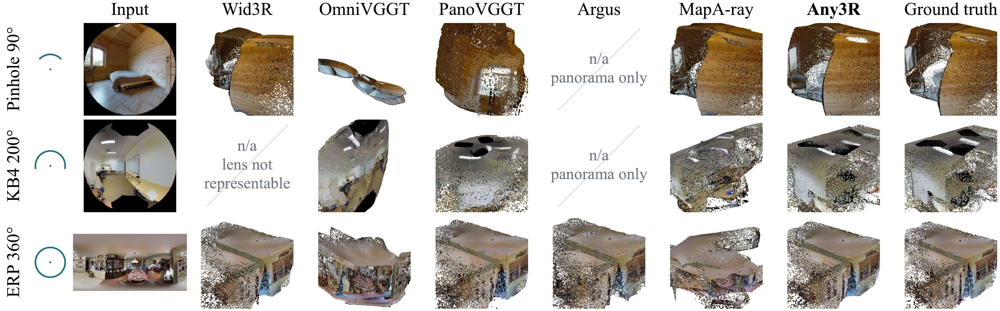

1South Dakota State University2Aalto University3KTH Royal Institute of Technology4Cornell University5University of Cambridge6Karlsruhe Institute of Technology
†Equal contribution *Corresponding author
Twenty views of one street, each taken through one of eight camera models from a 90° pinhole to a 360° panorama, reconstructed together by Any3R in a single forward pass with its own predicted camera poses. The views are shown joining one by one along the street.
TL;DR Any3R is a feed-forward 3D reconstruction model that works with any central camera, including fisheyes beyond 180°, 360° panoramas and any mix of lenses in one scene, because it reads each view's ray field instead of assuming a pinhole.
Abstract
Geometry foundation models recover camera poses and dense geometry from a set of images with a feed-forward network, but they expect pinhole images. That assumption is inside the backbone too: the positional encoding and the training loss both bind an image position to a direction in space, and both depend on the lens. We condition both on the dense ray field, the unit direction through every pixel, which describes any central camera without a lens type, distortion coefficients or a bound on field of view. Angular coordinates give the rotary encoding the measured ray angle of each patch, evaluated per view, and solid-angle weighting scales the point loss by the area each pixel covers on the sphere, so neither the encoding nor the supervision depends on the lens. Any3R is therefore a feed-forward model that takes any central camera, and is robust to mixing many camera types per scene, with no retraining per lens. On a benchmark of thirteen central cameras across three datasets, where every method reconstructs with its own predicted camera poses, it is the most consistently accurate method. Any3R enables scalable 3D reconstruction from heterogeneous crowdsourced and archival imagery collections sourced across diverse camera types.
Interactive results
Point clouds and cameras predicted by the released model in one forward pass, with its own camera poses, for real fisheyes, rendered lenses and panoramas. The views join one by one when a scene opens (press ▶ to replay). For the web, low-confidence points and points no other view confirms are dropped. Drag to orbit, right-drag to pan, scroll to zoom; camera markers are coloured by field of view.
Loading…
≤ 100°180°200°+360°
Why the ray field matters
A pixel grid says where a patch sits in the image, not where it looks: the same patch stands for a different direction, and a pixel for a different solid angle, on every lens. Below, the same network runs with its ray field withheld (it then reads every frame as a panorama) and supplied. The spheres show where each pixel of the first view is sent; the clouds fuse all three views with predicted poses.
Ray field withheld
RaysDistance
Ray field supplied
RaysDistance
Data of the paper's motivation figure. Withheld, the reconstruction follows the panorama reading, which is correct only at 360°.
How it works
A central camera is fully described by the direction of the ray through each pixel, whatever the lens. Any3R takes this ray field with every view and uses it in the two places where a pinhole model silently assumes a lens.

Ray field in, any lens
Each view comes with the unit ray of every pixel, computed from any calibration: pinhole, distortion polynomials, fisheye models or panoramas. Views with different cameras and sizes share one forward pass.
Angular coordinates
The rotary position embedding locates each patch by the measured elevation and azimuth of its rays, per view, instead of its row and column, so attention sees where a patch looks rather than where it sits in the image.
Solid-angle weighting
The point loss is weighted by the area each pixel covers on the sphere, so every direction counts by how much of the world it covers, not by how many pixels a lens happens to spend on it.
Thirteen camera models, one set of weights
The benchmark images every scene through the same views with thirteen central camera models, from a 90° pinhole to 360° panoramas. Eight are used in training and five are held out. Each panel shows how a model maps the incidence angle θ to the image, as a 2D section and as a 3D ray field.
Show the thirteen camera models

Same views, seven methods
Each scene is imaged by three views through one camera model. Every method fuses its own per-view points with its own predicted poses, and one similarity transform places each cloud in the ground-truth frame. The two viewers share one camera; pick a method above each.
Loading…
Loading…
Data of the paper's eight-camera comparison figure (120k points per cloud). Indoor clouds hide their own highest 30% of points, the same rule for every method, so the room can be seen from above.
Quantitative results
Acc is the mean distance from a reconstructed point to the ground truth (metres, lower is better); AUC is the area under the pairwise pose-error curve up to 15° and 30° (higher is better). All methods use their own predicted poses. bestsecond
Real lenses, zero-shot
Two real fisheye datasets that Any3R never saw: the ScanNet++ DSLR fisheye and the 200° lens of the FIORD rig. The samples shown are those on which Any3R leads the most; averages over all samples are in the zero-shot table above.

Against camera-aware methods
One scene per row and camera model; every method fuses the same three native views with its own predicted poses.

BibTeX
@article{chen2026any3r,
title = {Any3R: Feedforward 3D Reconstruction from Any Camera Type},
author = {Chen, Jingong and Zhang, Qingwen and Deng, Youming and Pack, Chulwoo and
Wysocki, Olaf and Jutzi, Boris and Won, Kwanghee and Gao, Kyle},
journal = {arXiv preprint arXiv:2610.36150},
year = {2026}
}
Acknowledgments
This work was supported by the U.S. National Science Foundation under Grant No. 2316400 and by the Wallenberg AI, Autonomous Systems and Software Program (WASP) funded by the Knut and Alice Wallenberg Foundation. The computations and data handling were enabled by the Arrhenius HPC resource provided by the National Academic Infrastructure for Supercomputing in Sweden, and by the South Dakota State University High Performance Computing (SDSU HPC) team. Any3R builds on VGGT-Omega and PanoVGGT. Example scenes are from PanoCity (CC BY 4.0) and FIORD (CC BY 4.0).